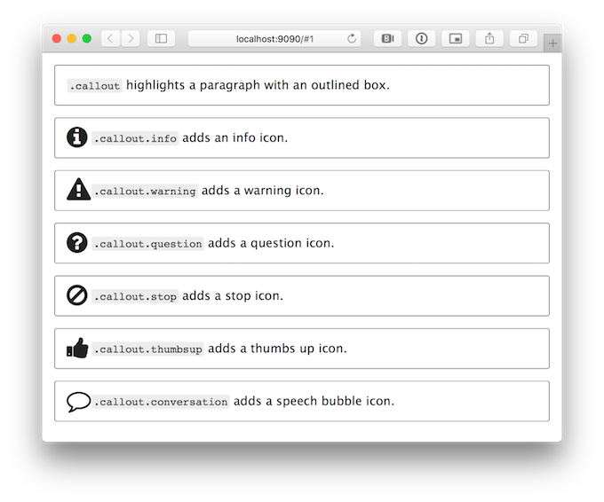

Slide Format¶ ↑
You can break your slides up into sections of however many subdirectories
deep you need. ShowOff will recursively check all the directories
mentioned in your showoff.json file for any markdown files
(.md). Each markdown file can have any number of slides in it, separating
each slide with the '!SLIDE' keyword and one or more optional slide
styles.
For example, if you run 'showoff create my_new_pres'
it will create a new starter presentation for you with one .md file at
one/slide.md which will have the following contents:
!SLIDE # My Presentation # !SLIDE bullets incremental transition=fade # Bullet Points # * first point * second point * third point
That represents two slides, the first contains just a large title, and the
second is faded into view showing the title and three bullets that are then
incrementally shown. In order for ShowOff to see those slides, your
showoff.json file needs to look something like this:
{
"name": "Something",
"description": "Example Presentation",
"sections": [
{"section":"one"}
]
}
If you have multiple sections in your talk, you can make this json array
include all the sections you want to show in which order you want to show
them. Template configuration is done in showoff.json as well.
Instead of a hash, you can use a plain string as an entry in the
sections section of showoff.json. And if that
plain string starts with '#' then it is interpreted not as a
filename, but as markdown. This is used for inserting interstitial slides
or notes – for instance, Alex Chaffee's Ruby Notes uses it to insert
lab instructions between lecture slide sections, which may vary from venue
to venue.
You can use angle brackets around the `!SLIDE` keyword and styles, if you'd like. For example:
<!SLIDE bullets incremental transition=fade>
This lets you keep the ability to emit an HTML document from your Markdown source file – say, for a TextMate preview or a GitHub rendering
You can link to specific slides using either a slide number, or a name. The number can be found in the URL of your browser, and the name is shown in the debug output or in the upper left of the presenter view.
Markdown Format¶ ↑
Showoff renders Markdown format as documented at daringfireball.net/projects/markdown/syntax. Many of the rendering engines supported by Showoff provide extensions allowing more formatting options not available in core Markdown. Each engine provides different options and the defaults for each are documented in the Markdown Engine section. The full options supported by each engine can be found in their respective documentations.
Some of the extensions include:
- autolink
-
Recognize and parse bare links even when they are not marked up properly.
- definition_lists
-
Parse definition lists, PHP-Markdown style.
- strikethrough
-
Parse strikethrough text surrounded with two
~~characters. - superscript
-
Parse superscripts after a `^` character.
- tables
-
Parse tables, PHP-Markdown style.
- underline
-
Parse underscored emphasis as underlines. This is
_underlined_but this is still*emphasis*.
Showoff extensions to the language are documented below.
Slide Styles¶ ↑
Some useful styles for each slide are listed below. Many of them can be combined.
- center
-
centers images on a slide
- full-page
-
allows an image to take up the whole slide
- bullets
-
sizes and separates bullets properly (fits up to 5, generally)
- smbullets
-
sizes and separates more bullets (smaller, closer together)
- subsection
-
creates a different background for titles
- command
-
monospaces h1 title slides
- commandline
-
for pasted commandline sections (needs leading '$' for commands, then output on subsequent lines)
- code
-
monospaces everything on the slide
- incremental
-
can be used with 'bullets' and 'commandline' styles, will incrementally update elements on arrow key rather than switch slides
- inverse
-
changes to a dark background and light text.
- small
-
make all slide text 80%
- smaller
-
make all slide text 70%
- execute
-
on Javascript, Coffeescript, Ruby, and Shell highlighted code slides, you can click on the code to execute it and display the results on the slide
- printonly
-
this slide should only appear in the printed version of the presentation
- noprint
-
this slide will not appear in the printed version of the presentation
- supplemental
-
rather than adding a slide to the main presentation, add a slide to supplemental materials. See below.
- form=id
-
Render form elements on this slide with a given form ID. See below, and in FORMS.rdoc.
- background-fit
-
Scales a background image to the largest size that both height and width are onscreen. The default is to completely fill the slide.
- bigtext
-
This will enlarge all the contents of the slide to the maximum possible size. Caution, this should only be used for slides with just a few words or short phrases!
Check out the example directory included to see examples of most of these.
Callout paragraph styles¶ ↑
Several custom “callout” paragraph styles are included. This allows you to
highlight points in your presentation, with a callout box and an optional
icon. To do this, add .callout or
.callout.[style] as the first word of your paragraph, such as:
<!SLIDE > # Example callout paragraphs .callout This paragraph will be highlighted with an outlined box. .callout.info Adding the `.info` modifier adds an info icon.

Supplemental Materials¶ ↑
Supplemental materials may be created by including
supplemental and the name of a type in the <!SLIDE>
styles. For example, you might have a slide like
<!SLIDE supplemental exercises> # Lab ~~~SECTION:MAJOR~~~.~~~SECTION:MINOR~~~: This is a lab ## Objective: Do something [... slide content ...]
The supplemental materials may be accessed at localhost:9090/supplemental/$type-name. For example, the material described in the example above would be accessed at localhost:9090/supplemental/exercises. If you have slides and supplemental material that are related to one another, they could be contained in the same file. This makes it extraordinarily easy to reorder the presentation.
Slide Transitions¶ ↑
Transitions can be supplied through the use of transition=tname on the !SLIDE definition, where tname is one of the following supported transitions:
-
blindX
-
blindY
-
blindZ
-
cover
-
curtainX
-
curtainY
-
fade
-
fadeZoom
-
growX
-
growY
-
none (this is the default)
-
scrollUp
-
scrollDown
-
scrollLeft
-
scrollRight
-
scrollHorz
-
scrollVert
-
shuffle
-
slideX
-
slideY
-
toss
-
turnUp
-
turnDown
-
turnLeft
-
turnRight
-
uncover
-
wipe
-
zoom
The transitions are provided by jQuery Cycle plugin. See www.malsup.com/jquery/cycle/browser.html to view the effects and www.malsup.com/jquery/cycle/adv2.html for how to add custom effects.
Slide Backgrounds¶ ↑
A custom per slide background can be set in the slide options. For example:
!SLIDE[bg=customLogo.png]
Unlike image tags on a slide, the path to background images must start from the root of the presentation.
By default, the background will be scaled to completely cover the slide. If
you specify the background-fit slide style, then the
background will be scaled to the largest size that both height and width
fit within the slide.
Language Highlighting¶ ↑
Showoff uses highlightjs to highlight code blocks. If you begin a code block with *four spaces* and three @-signs followed by a programming language name, that line will be stripped and the rest of the block will become sparkly and colorful. You can uppercase the name if you like.
@@@ Ruby
10.times { puts "Whee!" }
Supported languages include:
1c elm markdown ruleslanguage actionscript erb mathematica rust apache erlang-repl matlab scala applescript erlang mel scheme armasm fix mercury scilab asciidoc fortran mizar scss aspectj fsharp monkey smali autohotkey gcode nginx smalltalk avrasm gherkin nimrod sml axapta glsl nix sql bash go nsis stata brainfuck gradle objectivec step21 cal groovy ocaml stylus capnproto haml openscad swift ceylon handlebars oxygene tcl clojure-repl haskell parser3 tex clojure haxe perl thrift cmake http pf tp coffeescript inform7 php twig cpp ini powershell typescript cs java processing vala css javascript profile vbnet d json prolog vbscript-html dart julia protobuf vbscript delphi kotlin puppet verilog diff lasso python vhdl django less q vim dns lisp r x86asm dockerfile livecodeserver rib xl dos livescript roboconf xml dust lua rsl zephir elixir makefile ruby
Instructions for adding support for new languages can be found at highlightjs.readthedocs.org/en/latest/language-contribution.html
Syntax highlighting styles¶ ↑
You can configure the highlighting style used by providing a
highlight key in the showoff.json file. For
example:
{
"name": "Something",
"description": "Example Presentation",
"highlight": "agate",
...
}
Highlighting styles include:
agate atelier-seaside.light mono-blue androidstudio atelier-sulphurpool.dark monokai arta atelier-sulphurpool.light monokai_sublime ascetic brown_paper obsidian atelier-cave.dark codepen-embed paraiso.dark atelier-cave.light color-brewer paraiso.light atelier-dune.dark dark pojoaque atelier-dune.light darkula railscasts atelier-estuary.dark default rainbow atelier-estuary.light docco school_book atelier-forest.dark far solarized_dark atelier-forest.light foundation solarized_light atelier-heath.dark github-gist sunburst atelier-heath.light github tomorrow-night-blue atelier-lakeside.dark googlecode tomorrow-night-bright atelier-lakeside.light hybrid tomorrow-night-eighties atelier-plateau.dark idea tomorrow-night atelier-plateau.light ir_black tomorrow atelier-savanna.dark kimbie.dark vs atelier-savanna.light kimbie.light xcode atelier-seaside.dark magula zenburn
Console Windows¶ ↑
If you'd like to show a representation of a console window, you can use
the syntax highlight styles of Console and
PowerShellConsole. You can also add the class of
nochrome if you don't want the window titlebars drawn.
For example:
@@@ Console root@localhost # echo "This is a console window"
@@@ PowerShellConsole PS C:\> echo "This is a PowerShell window"
@@@ Console nochrome root@localhost # echo "This is a console window with no titlebar"
@@@ PowerShellConsole nochrome PS C:\> echo "This is a PowerShell window with no titlebar"
Rendering Diagrams¶ ↑
Showoff includes the [Mermaid](knsv.github.io/mermaid) diagram
renderer, which allows you to describe diagrams with a simple language and
style them with CSS. To do so, create a code block using a highlight style
of render-diagram.
For example:
@@@ render-diagram
gantt
dateFormat YYYY-MM-DD
title Adding GANTT diagram functionality to mermaid
section A section
Completed task :done, des1, 2014-01-06,2014-01-08
Active task :active, des2, 2014-01-09, 3d
Future task : des3, after des2, 5d
Future task2 : des4, after des3, 5d
section Critical tasks
Completed task in the critical line :crit, done, 2014-01-06,24h
Implement parser and jison :crit, done, after des1, 2d
Create tests for parser :crit, active, 3d
Future task in critical line :crit, 5d
Create tests for renderer :2d
Add to mermaid :1d
See knsv.github.io/mermaid/index.html#flowcharts-basic-syntax for a syntax tutorial.
Forms¶ ↑
Showoff extends Markdown to render a limited subset of form elements. This is mostly useful for polls, quizzes, surveys, etc. See FORMS.rdoc for more complete information.
Sections¶ ↑
Presenter Notes¶ ↑
Surround presenter notes with ~~~SECTION:notes~~~ and
~~~ENDSECTION~~~ tags. It will display in the bottom section
of the presenter view. The footer on the display window will also display
shorter notes. Toggle these with the n key while in the presentation.
~~~SECTION:notes~~~ This is a presenter note example. ~~~ENDSECTION~~~
Personal Notes¶ ↑
In some use cases, it's useful to have personal notes that are separate
from the presenter notes built into the presentation itself. For example,
you might share a presentation repository with others, but would like the
ability add your own notes to slides. This can be done by creating a
markdown file in the _notes directory of your presentation.
The filename should mirror the name of the slide.
For example, if the name as displayed in the upper left of the presenter
view was Introduction/About then the personal notes file
should be _notes/Introduction/About.md.
Handout Notes¶ ↑
Surround handout notes with ~~~SECTION:handouts~~~ and
~~~ENDSECTION~~~ tags. It will display below the slide in the
printed version..
~~~SECTION:handouts~~~ This is supplementary material that will appear in the printed version. ~~~ENDSECTION~~~
Handout notes are best viewed by printing the /print view from
your browser. Each slide will be printed on a new page and handout notes
will be included below the slide contents. Handout notes can contain any
markup that the slide itself can.
Adding Notes Sections¶ ↑
You can add arbitrary section types by simply declaring them on a slide. All sections attached to a slide can be chosen from a flyaway tab widget in the notes field in the presenter. For example, if a slide contained the following notes sections,
~~~SECTION:notes~~~ This is a presenter note example. ~~~ENDSECTION~~~ ~~~SECTION:handouts~~~ This is supplementary material that will appear in the printed version. ~~~ENDSECTION~~~ ~~~SECTION:guide~~~ This is an additional notes section that may be chosen from the tab bar. ~~~ENDSECTION~~~
then the section selector would contain notes,
handouts, and guide.
Printing Notes Sections¶ ↑
When printing the presentation, you can choose which notes section to attach below the slides.
# Prints the presenter notes showoff static print notes # Prints a section called "guide" showoff static print guide
By default, the handouts section will be attached. In other
words, showoff static print will behave just like
showoff static print handouts.
Other Tags¶ ↑
- ~~~SECTION:MAJOR~~~
-
This is the section major number. It is a counter that increments each time a subsection tag is encountered.
- ~~~SECTION:MINOR~~~
-
This is the section minor number. It is incremented each time it is used and reset each time a subsection tag is encountered.
- ~~~FILE:filename.ext~~~
- ~~~FILE:filename.ext:filetype~~~
-
Includes the content of a file in the
_filesdirectory on the slide as code. If the optionalfiletypeis included then the code block will be syntax highlighted appropriately. - ~~~PAGEBREAK~~~
-
Just generates a
<div class="pagebreak">continued...</div>HTML snippet which is styled as a hard page break in modern HTML rendering engines. - ~~~TOC~~~
-
Generates a Table of Contents using the subsection titles. Some renderers (such as PrinceXML) are able to autonumber the table with links to content.
- ~~~FORM:id~~~
-
Places a continuously updating block displaying the live results from the form with the given ID. This is most useful when you're performing a poll or pop quiz during the presentation.
Preshow¶ ↑
If you want to show a slideshow while you wait to speak, you can run a
preshow. Add a _preshow directory to your project (I use a
symlink, so I don't have to add all the images into Git), put a bunch
of images in the _preshow directory and optionally add a
preshow.json file that provides descriptions for any of the
images. If you then press 'P' at the beginning of
your presentation, it will prompt you for a number of minutes until you
start. Then it will count down the time until then, flipping through your
pictures to entertain the audience in the meantime. Press
'P' again to stop, or wait until the timer runs out.
Download Files¶ ↑
Add a line that starts with .download and contains the name of
a file in the _files subdirectory of your presentation.
.download file.tar.gz
Once the instructor has viewed the next slide in your presentation, the
file listed here will be available to download on the
/download page. For example, if the file was referenced on
page #42, then the file would be listed when the instructor advances to
slide #43.
Note, this means only the next slide, not any subsequent slide.
To share files on an ad-hoc basis, the instructor can simply drop files
into _files/share. All files existing in this directory will
be listed when students hit the download page. Showoff does not need to be
restarted, even if you drop files in here during a presentation.
Showing Plain Old Markdown¶ ↑
If a Markdown file has no !SLIDE keywords, then Showoff will treat every line beginning with a single hash – i.e. every H1 – as a new slide in “bullets” style. Remember that you can't specify classes or transitions in this mode, and as soon as you add one !SLIDE you need them everywhere.
Custom JavaScript¶ ↑
To insert custom JavaScript into your presentation you can either place it
into a file (with extension .js) into the root directory of your
presentation or you can embed a <script> element
directly into your slides. This JavaScript will be executed—as usually—as
soon as it is loaded.
If you want to trigger some JavaScript as soon as a certain page is shown or when you switch to the next or previous slide, you can bind a callback to a custom event:
- showoff:show
-
will be triggered as soon as you enter a page
- showoff:next
-
will be triggered when you switch to the next page
- showoff:incr
-
will be triggered when you advance to the next increment on the page
- showoff:prev
-
will be triggered when you switch to the previous page
These events are triggered on the “div.content” child of the slide, so you must add a custom and unique class to your SLIDE to identify it:
!SLIDE custom_and_unique_class
# 1st Example h1
<script>
// bind to custom event
$(".custom_and_unique_class").bind("showoff:show", function (event) {
// animate the h1
var h1 = $(event.target).find("h1");
h1.delay(500)
.slideUp(300, function () { $(this).css({textDecoration: "line-through"}); })
.slideDown(300);
});
</script>
This will bind an event handler for showoff:show to your slide. The h1-element will be animated, as soon as this event is triggered on that slide.
If you bind an event handler to the custom events showoff:next or showoff:prev, you can prevent the default action (that is switching to the appropriate slide) by calling *event.preventDefault()*:
!SLIDE prevent_default
# 2nd Example h1
<script>
$(".prevent_default").bind("showoff:next", function (event) {
var h1 = $(event.target).find("h1");
if (h1.css("text-decoration") === "none") {
event.preventDefault();
h1.css({textDecoration: "line-through"})
}
});
</script>
This will bind an event handler for showoff:next to your slide. When you press the right arrow key the first time, the h1-element will be decorated. When you press the right array key another time, you will switch to the next slide.
The same applies to the showoff:prev event, of course.
Custom Stylesheets¶ ↑
To insert custom Stylesheets into your presentation you can either place it
into a file (with extension .css) into the root directory of your
presentation or you can embed a <link> element directly
into your slides. This stylesheet will be applied as soon as it is loaded.
The content generated by the slide is wrapped with a div with
the class .content like this.
<div ref="intro/01_slide/1" class="content" style="margin-top: 210px;"> <h1>jQuery & Sinatra</h1> <h2>A Classy Combination</h2> </div>
This makes the .content tag a perfect place to add additional
styling if that is your preference. An example of adding some styling is
here.
.content {
color: black;
font-family: helvetica, arial;
}
h1, h2 {
color: rgb(79, 180, 226);
font-family: Georgia;
}
.content::after {
position: absolute;
right: 120px;
bottom: 120px;
content: url(jay_small.png);
}
Note that the example above uses CSS3 styling with ::after and
the content -attribute to add an image to the slides.
If you would like to use CSS to change the size of your slides from the default of 1024x768, you'll want to use rules such as:
#preso,
.slide {
width: 1280px !important;
height: 800px !important;
}
You can style individual paragraphs and images by including a class name prefixed with a period as the first word of the text or of the description. For example, a styled paragraph would look like:
.customstyle This is a paragraph of text. It's nothing special except that the <tt><p&rt;</tt> tag will have the class <tt>customstyle</tt> applied to it.
A styled image will look like:

Templates¶ ↑
Templates can come handy if you need more than what you can achieve via
CSS. To configure templates you'll have to specify them in the
showoff.json by adding an entry called “templates”. This entry
is an object where you can specify as many templates as you want. The
default template is marked with the “default” key.
{
"name": "Something",
"description": "Example Presentation",
"templates" : {
"default" : "tpl1.tpl",
"special" : "tpl2.tpl"
},
"sections": [
{"section":"one"}
]
}
If the “default” key is not given, no template will be used for the default slide. If you want to apply a certain layout to a slide you have to specify it in the slide header:
!SLIDE[tpl=special] # Header
Template Commands¶ ↑
You can place content anywhere in your template, but you have to explicitly mark the location using a special command:
- ~~~CONTENT~~~
-
is replaced by the slide content
- ~~~CURRENT_SLIDE~~~
-
is replaced by the current slide number
- ~~~NUM_SLIDES~~~
-
is replaced by the total number of slides
- ~~~CONFIG:*~~~
-
is replaced by any value (*) from the
showoff.jsonconfiguration. This can be used to specify an author, venue, etc. A simple example would be~~~CONFIG:author~~~
The usage of these replacements is not limited to templates, but anywhere in your slides.
Template Hints¶ ↑
You can basically put everything you want into templates, but you should make sure that the CSS is applied fine. The best way to apply a custom layout is to create a container that uses absolute positioning and has width and height set to 100% which are then derived from the parent slide element.
Live code execution¶ ↑
Showoff can execute code from a slide and display the results live for
demonstration purposes. To do this, mark your code block with the keyword
execute. Any code that Showoff has handlers for can be
executed. This includes:
- Executed directly in the browser
-
Coffeescript
-
Javascript
-
- Executed on the machine running the Showoff presentation
-
Perl
-
Puppet
-
Python
-
Ruby
-
Shell
-
See PRESENTATION.rdoc to learn how to define your own handlers to evaluate any language you'd like.
Security: code must exist in a slide file on disk for
Showoff to execute it. This doesn't mean that you're immune from
attack though. It's possible to create a presentation with embedded
Javascript that will automatically call back and execute malicious code on
a slide. To help mitigate this attack profile, Showoff must be started with
the -x or --executecode flags to enable code
execution.
Shell code¶ ↑
@@@ Shell execute find . -name '*.md'
Ruby code¶ ↑
@@@ Ruby execute
[1,2,3,4].map do |num|
num * num
end
If you need supporting libraries when you evaluate Ruby code, you can put
Ruby files (*.rb) into the root directory of the presentation
and they will be auto-required when the presentation loads.
Editor Support¶ ↑
The “add slide” feature can allow you to add the necessary boilerplate from your editor.
- TextMate Bundle
-
Showoff.tmdbundle
-
Dr Nic Williams
-
- Emacs
-
major-mode - showoff-mode
-
Nick Parker
-
- vim
-
!showoff add -t code Check This Code
And your buffer will get
!SLIDE # Check This Code # @@@ Ruby code_here()added where your cursor was. Binding this to a keybinding can allow you to add new slides quickly. See the commandline section for interesting Showoff commands.
-